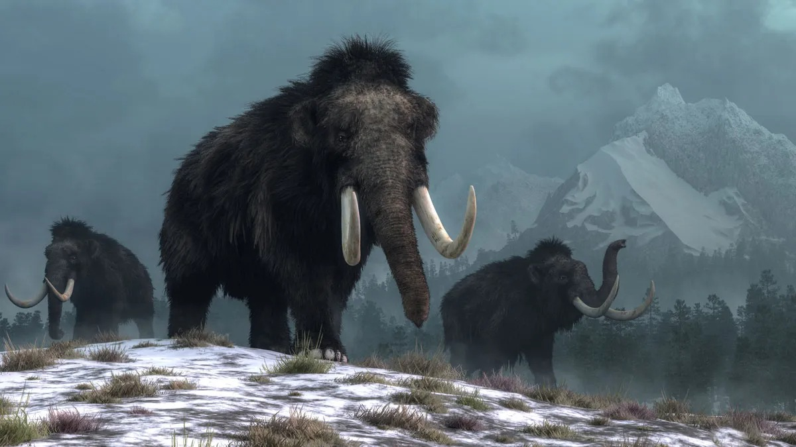

1. Woolly Mammoth (Mammuthus primigenius)
o Era: Late Pleistocene
o Features: Thick fur, long curved tusks, adapted to cold environments.
o Size: About 10-12 feet tall, weighing up to 6 tons.
o Region: Northern Eurasia and North America.

2. Imperial Mammoth (Mammuthus imperator)
o Era: Pleistocene
o Features: One of the largest mammoth species, with long, spiraled tusks.
o Size: Up to 13-14 feet tall, weighing up to 10 tons.
o Region: North America.


3. Steppe Mammoth (Mammuthus trogontherii)
o Era: Early to Middle Pleistocene
o Features: Ancestor of the Woolly Mammoth, with large tusks and a more temperate habitat.
o Size: Up to 13-15 feet tall.
o Region: Europe and Asia.
4. Songhua River Mammoth (Mammuthus sungari)
o Era: Late Pleistocene
o Features: Considered the largest mammoth, with extremely long tusks.
o Size: Over 15 feet tall, weighing up to 15 tons.
o Region: Northern China and Siberia.